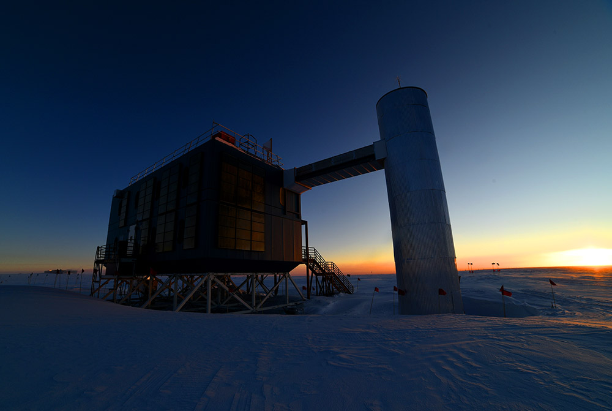
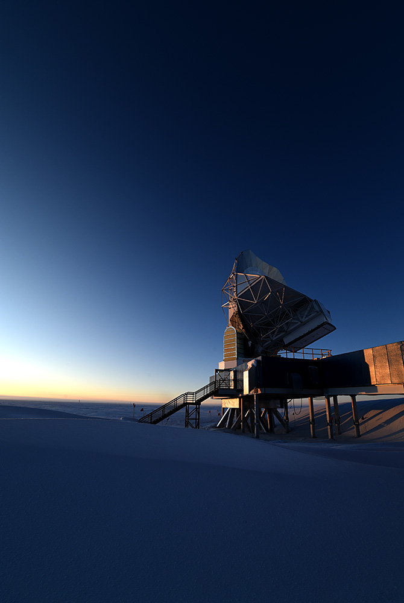
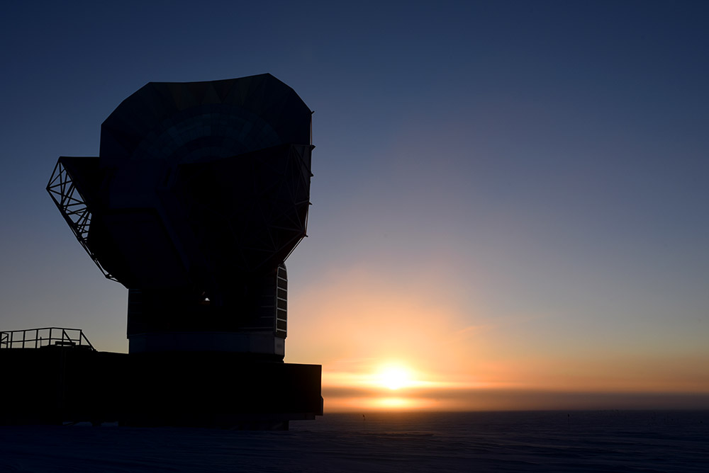
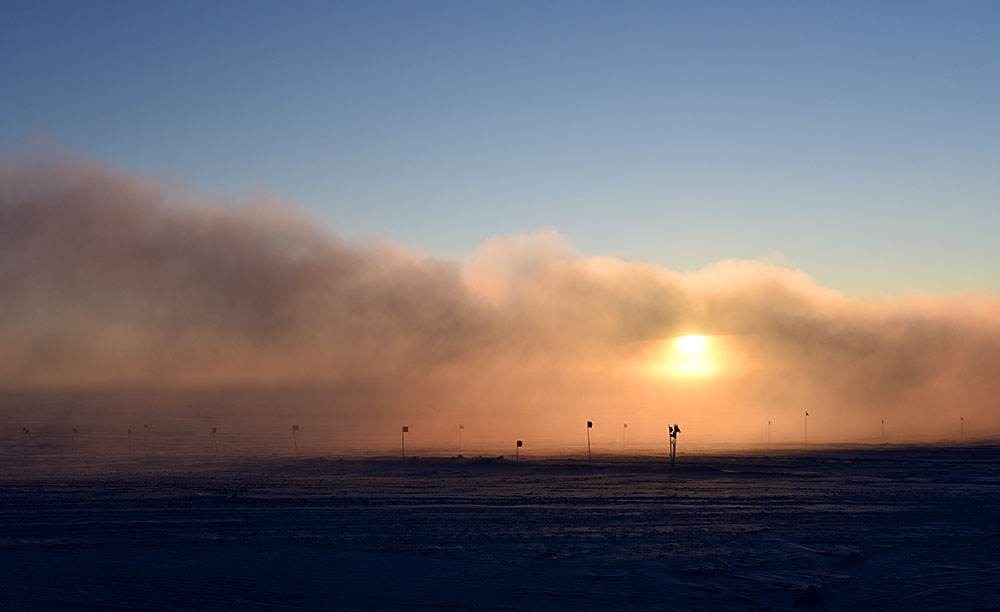
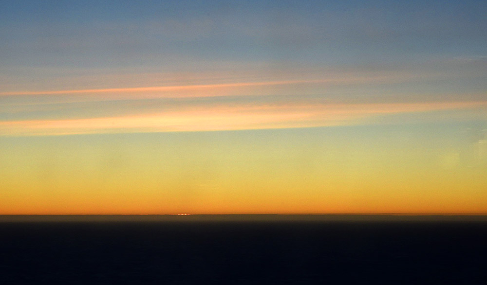

Captain's Web Log(7) - 25 March 2016 - What is twilight?
Day is done, gone the sun.
The sun set last night here at the end of the world, and so begins several weeks of twilight, the beginning of our 6-month night, which raises the question: what
is twilight?
No, not the vampire books.

The IceCube Neutrino Observatory building at sunset. (more about IceCube and the other polar science projects in a future post)
And for that matter, what exactly is sunset? To have twilight you must first have sunset ('if you wish to make a twilight from scratch...'). Sunset, as it happens, is surprisingly complicated at the south pole. Being at the very end of the planet, at 90 degrees south,
we have only one sunrise and one sunset per year. These occur near (but not on, as you'll hopefully understand shortly) the vernal and autumnal equinoxes, respectively. This year, the autumnal equinox happens on March 20 at 17:30 local time (04:30 UTC).
So, what is the sun doing at the moment of the equinox? As the name suggests (equi-nox... equal-night), the equinox is the day (whether in spring or fall) when the day and night are equal in length. Everywhere else on the planet, that means you
have 12 hours of day and 12 hours of night on that date. Here at the south pole, it's when we cross over from day to night, summer to winter. At the moment of the equinox, the sun is exactly half above and half below the horizon, if you assume no
bending of light by the atmosphere, and a perfectly flat horizon at the exact same elevation that you're observing from. Of course none of those assumptions are true in the real world,
so the sun doesn't actually
look like it's half above and half below the horizon at that moment. Bending by the atmosphere makes the sun appear much higher in the sky than
its actual physical location. How much depends on many somewhat unpredictable factors like atmospheric pressure, density, and temperature, but the difference ends up being roughly half a degree
in apparent elevation (for reference, the sun itself is around half a degree in angular size). So that's about one sun-width of offset, if you still assume that you're
observing from level with the ground and that the horizon is flat. If you're observing from somewhere above the ground (for instance, if you are standing up, or standing inside an elevated building),
then the higher the point from which you're observing, the farther away the horizon is, and so the farther above the horizon the sun appears. If the horizon isn't flat (i.e. if there are little [or big] hills
and valleys out there), then the sun will look closer to the horizon if it's over a hill, and it will look farther above the horizon if it's over a valley.

The South Pole Telescope at sunset

Another view of SPT at sunset
Sunset is defined as the moment when the sun
disappears behind the horizon. So while what matters for the equinox is the actual physical location of the sun,
for sunset what matters is the apparent position of the sun (accounting for the atmosphere, your height, and any lumps and bumps on the horizon). That means that while we know
exactly when the sun will reach equinox, we didn't know in advance when sunset would be. Roughly speaking, we expect sunset around a few days after the equinox (and sunrise a few days before the vernal equinox), but it could be more or less; you
can't know for sure until it happens.


The laaaaaaaast little sliver of sun on Thursday night. You can see a little hint of green flash on the center-right.
Ok, so you've got your equinox, and you've got your sunset (whenever it decides to happen). What about twilight? Twilight is what happens just after sunset (or just before sunrise), and is the time when the sun is
below the horizon, not directly visible, but the Earth's surface is still partially illuminated by sunlight being scattered through the upper atmosphere. There are three stages of twilight: civil, nautical, and astronomical.
First comes civil twilight, which is the time from when the sun sets to when it's 6 degrees below the horizon. According to Wikipedia, "Civil twilight is approximately the limit at which solar illumination is sufficient, under clear weather conditions, for terrestrial objects to be clearly distinguished."
In other words, it's still pretty light outside as long as it's not too cloudy. Nautical twilight is when the sun is between 6 degrees and 12 degrees below the horizon. During nautical twilight, the horizon and bright stars are visible, but terrestrial objects
other than the horizon may be hard to see, and it's too bright to see dimmer astronomical objects. Astronomical twilight is when the sun is between 12 and 18 degrees below the horizon. For most practical purposes, it's completely dark by the beginning of astronomical
twilight, but there is still enough scattered light from the sun that astronomical observations of dim or diffuse objects like nebulae might be washed out (and really, for some very dim or diffuse objects, the sun may have to be even more than 18 degrees below the horizon,
but when the definition of astronomical twilight was made up, we didn't have telescopes powerful enough to see those objects, so we're stuck with a kind of arbitrary cutoff point).
Anyway, we're now in civil twilight, which will last until the afternoon of April 4 (UTC). Nautical twilight will go until early on April 21, UTC, and astronomical twilight will go until early on May 11, UTC.
I got some real, live questions from a real, live blog-reader the other day (Hi Tom!), and I promised to answer them in this post. The first even has to do with time, so
this is a fitting post in which to answer it.
Q: How do you define morning and night? Do you use UTC, working during what would be daylight hours and sleeping during what would normally be night?
A: We keep New Zealand time, so at the moment we're on NZDT and soon we'll be 'falling back' to NZST. Why New Zealand? The vast majority of flights to Pole (including all
supply flights) come from McMurdo, which is on NZ time. It's easier to plan communications and flights between McMurdo and Pole if both are on the same time, so we too are on NZ time.
Why is McMurdo on NZ time? Because supply flights and passenger flights bringing people in from off-continent to McMurdo are nearly all from Christchurch, NZ, and again, it's easier for
communications and flight planning if the time zones are the same, so McMurdo keeps NZ time.
So our mealtimes and rec schedule follow "normal" times in NZ time, and people who work the same hours every day follow a normal day schedule in NZ time (except, of course, for
a couple of people who work night shift on jobs that require 24-hour monitoring, like the power plant). Many people with more flexible work schedules do choose to keep alternative
schedules that don't line up with our "day". Since it's equally
light (or dark) all "day" it doesn't much matter from that side of things where you decide to put your sleep/wake schedule. Some folks like to put their 'day' during times when
the station is a bit quieter. Some prefer to have their day during the time when the satellites are up (which follows the sidereal day, creeping 4 minutes earlier every 24 hours).
I have been keeping a more or less "standard" day schedule, though occasionally I do a sort of bi-phasic sleeping thing where I take a long-ish nap in the afternoon so I can stay up later
to get more satellite time. I've been thinking of switching over entirely to the bi-phasic thing (it has the advantage of being awake for all of the meals and recreational activities / socializing
in the evenings, but also getting more satellite time, which is conducive to working on writing my thesis) but I haven't decided yet.
Q: I read that you use jet-fuel powered generators, so you must need to store fuel for the entire winter. Solar power is obviously not viable, but what about windmill(s)?
Or are conditions just too harsh for something like that?
A: We use a few different types of fuels here. Most of the vehicles run on diesel (which means they mostly don't run in winter since even the special arctic diesel gels up around -40 C, and you certainly can't turn them off
outdoors in winter if you hope ever to start them again). Incidentally, that means in an emergency there's a real chance there would be no vehicles capable of
carrying an injured person back to the station from an out-building. Part of our emergency medical response training actually includes drills where we practice hauling a pretend patient around on a backboard strapped to a 1950s vintage
dog sled. We can get two people pulling at the front and 4 pushing from the back (with extra people running alongside to trade out when someone needs a break), and we actually manage to move at a decent clip, all things considered. Of course, plan A
is still to hope that if such an emergency ever happened, one of the snow mobiles that is stored indoors would be able to start and run, and we'd hook the sled up to that rather than trying to pull it by hand. But
in the kind of cold we experience here in the winter, it turns out manpower is the most reliable form of transportation.
Other things, like the many generators at the main station and in the various outbuildings
run on AN8 (jet fuel) which is carried in overland by the three summer traverses and by LC-130 flights in the summer and stored in large tanks in the fuel arch for the winter.
I'm not sure specifically why we don't use wind power here, though I can hazard some educated guesses. For one thing, windmills
require pretty consistent, sustained winds. We don't really have that here. Sure, it gets pretty windy occasionally, but most of the time it hovers around 5-10 knots (which I'm
not sure is even high enough to sustain a serious windmill), and we get
very calm days too. We're not part of a big electrical grid where we can get power from elsewhere on low-wind days, and deliver excess power to other places on high-wind days, so
the efficiency for wind power here would be much lower than in places where windmills are one facet of a larger power grid that's capable of more give and take. Next, wind turbines
have a lot of moving parts. Moving parts tend not to appreciate being -100 F (and options for lubricants that aren't completely solid and crunchy at those temperatures are pretty limited).
Plus, keep in mind it's dark and extremely cold all winter. Windmills, by their nature, of course have to live outside. Which means if it breaks, someone has to go climb a windmill in the dark
in temperatures which can be colder than -100 F (not even counting windchill), and fix it. The nice thing about regular generators is that they can live indoors.
I suspect between the increased probability of major mechanical failures, the decrease in efficiency that results from being a closed system with no give-and-take, and the danger of having a
system prone to breaking that has to be repaired outdoors make it not worth it. I suspect it's also relatively easier to find mechanics willing to winter over who are able to keep a regular generator running compared to those who know how to fix
a windmill. But that's all just my own guesses. I'm not really sure. As a side note, McMurdo, the US's main coastal station, ran on nuclear power for around 10 years in the 60s and 70s, but the program was discontinued
following concerns about soil contamination, and now McMurdo also runs primarily on AN8 and diesel.
Q: How do you deal with wastewater, sewage, and trash? A septic system is probably not workable in such extreme cold?
Does trash have to be saved and hauled out at the end of your stay?
A: All non-water, non-sewage waste is sorted and stored over the winter, and then flown off the continent in the summer to be disposed of in regular recycling and waste facilities.
For waste water and sewage we have a rodwell/sewage bulb system. A rodwell (short for Rodriguez well, after Raul Rodriguez, an Army engineer who invented the technique for use in Greenland in the 60s) is a bulb-shaped cavity melted under the surface of the ice and
used to provide potable liquid water. Here's a little article about them with some diagrams:
link. In order to
get clean water to start with,
we have a rodwell that goes down into the ice near the station. There's a limit to how
big the rodwell can get, and once we've maxed-out a rodwell, they start a new one down the line and convert the empty bulb of the old one into a sewage bulb, which we can fill back up with waste water and sewage. In general, the Antarctic Treaty
forbids leaving waste behind (which this certainly is), but the station has been granted an exception to the treaty which allows us to fill in the spent rodwells with sewage. It's
similar in some ways to a septic system, but here nothing breaks down (like it would in a septic tank) because it's too cold for the bacterial activity and enzyme reactions that would take care of that at more normal temperatures;
rather, everything that goes back into the rodwell freezes.
Basically our sewage storage system is a giant sub-glacial poopsicle. Before the rodwell system was started in the 90s, they
used snow melters to provide water to the station (and that's still our backup system in the event that the rodwell fails). I'm not sure what they did with sewage waste before the rodwells.
Q: Do you have any fresh food, at least to start? Or is everything you eat canned and/or preserved?
A: During the summer (very late October to mid-February, when there are several flights per week in and out) we get regular deliveries of fresh fruits and veggies (known colloquially as 'freshies') from New Zealand,
and they deliver a large amount of fresh food right before station close,
so we start out the winter with a nice big supply, which dwindles as the weeks drag on. The galley staff is responsible for doling them out, and they try to keep a balance between stretching
out the supply for as long as possible, while not letting things go bad before we eat them. Things like potatoes, onions, other root vegetables, and eggs keep for a long time, so we'll still have
things like that for quite some time. We've just recently finished off the last of the grapes, but we still have some oranges, avocados, lemons, and who knows what else.
We also grow our own food on station in our little greenhouse. The Antarctic Treaty forbids importing any soil, so everything is hydroponic. Normally the Treaty also forbids importing seeds, but
exceptions are granted for growing food in sufficiently contained conditions. Lately the greenhouse produces a couple pounds of veggies per week; enough that we get a nice salad with dinner
as often as a couple times per week. They mainly focus on relatively fast-growing
things like salad greens and cucumbers, but also grow hot and sweet peppers and fresh herbs.
Everything else we eat is frozen, canned, bottled, etc. While we have some DNF (do not freeze) food storage on station, the main food storage facility is in a large snow-buried arch that stays around -60 F
year-round, so most of what we eat must be able to be hard-frozen. Occasionally, things that are supposed to be DNF get frozen anyway. This year, it was several cases of Cholula hot sauce (our entire supply
for the winter). Every single bottle cracked and leaked. It was a very sad day on station when they were discovered; there was talk of giving the last unbroken bottle leftover from the summer supply a shrine in the ice tunnels, but I don't know
if that actually happened.
Also, dear real, live blog-readers: Do you have questions or ideas for posts you'd like to see? Let me know! I have a several more topics on my list, but I could use some more ideas to keep the posts coming through the winter. If you don't already have contact info for me,
you can find my email address in the FAQ in the 'how can I contact you' section.
What I've been up to
Pretty much the usual. Run the telescope, write the thesis, goof off. We switched from the summer galaxy cluster field to the winter CMB field on the telescope Wednesday night, and we've got the big sunset dinner coming up on Saturday.
In emergency medical team training this week we learned the basics of treating hypothermia and frostbite, and in clinic assistant training we learned about the South Pole walking blood bank and how to test for blood type. The walking blood bank
is how we handle getting blood for transfusions in the event of an emergency where a patient needs blood. The doctors have a list of the blood type of every person on station, so if a patient needs blood, there's a list close at hand of everyone
on station who has the same blood type, and we can quickly determine who to ask for a donation for a patient in need. Since we only have the capability of administering
whole blood here, it has to be an exact ABO+- match (there's no such thing as a universal donor when it comes to whole blood; fortunately everyone on station for the winter has at least one blood type buddy). It's a pretty neat system,
though hopefully we'll never need to use it.
Otherwise it's been business as usual.
Current conditions
Temperature: -81F/-63C
Windchill: -117F/-83C
Wind: 9.1 kts Grid 128
Barometer: 679.2 mb (10,658 ft/3,249m)
Sun elevation below the horizon: 2 degrees (Winter is here)